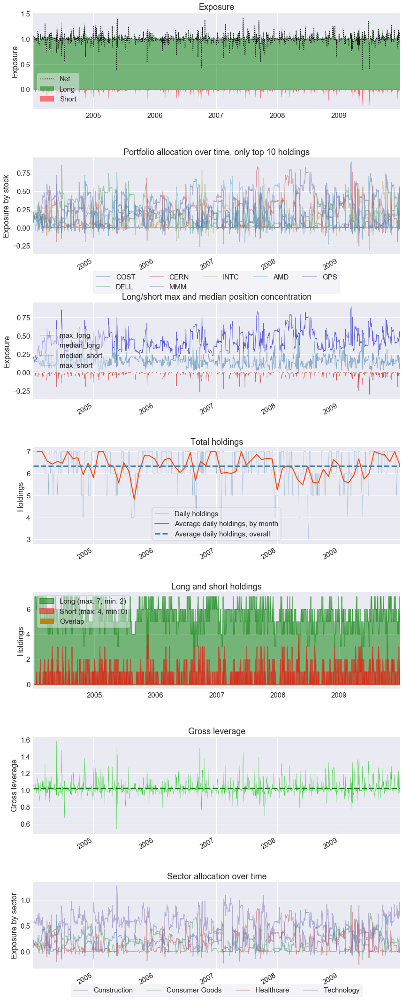

Sector Mappings
To generate sector allocation plots in the positions tearsheet and PnL by sector in the round trips tearsheet, you must pass pyfolio a dictionary (or dict-like data structure) of symbol-sector mappings, where symbols are keys and sectors are values. create_full_tearsheet will also take symbol-sector mappings as the keyword argument sector_mappings.
In this notebook, we generate the positions tear sheet and round-trip tear sheet with sector mappings.
import pyfolio as pf
import pandas as pd
%matplotlib inline
import gzip
import os
# silence warnings
import warnings
warnings.filterwarnings('ignore')
returns = pd.read_csv(gzip.open('../tests/test_data/test_returns.csv.gz'),
index_col=0, parse_dates=True, header=None)[1]
positions = pd.read_csv(gzip.open('../tests/test_data/test_pos.csv.gz'),
index_col=0, parse_dates=True)
transactions = pd.read_csv(gzip.open('../tests/test_data/test_txn.csv.gz'),
index_col=0, parse_dates=True)
returns.index = returns.index.tz_localize('UTC')
positions.index = positions.index.tz_localize('UTC')
transactions.index = transactions.index.tz_localize('UTC')
positions.head()
|
AMD |
CERN |
COST |
DELL |
GPS |
INTC |
MMM |
cash |
| index |
|
|
|
|
|
|
|
|
| 2004-01-09 00:00:00+00:00 |
6961.92 |
21017.07875 |
7282.266152 |
21264.55188 |
7091.080020 |
21259.333890 |
21316.129606 |
-6192.360298 |
| 2004-01-12 00:00:00+00:00 |
18198.58 |
18071.25000 |
17675.836401 |
10804.31924 |
10685.411865 |
17872.477480 |
10882.026400 |
-3329.289887 |
| 2004-01-13 00:00:00+00:00 |
12060.86 |
11942.24625 |
12838.477446 |
16078.90380 |
16272.139000 |
12465.392511 |
12579.135758 |
4708.039735 |
| 2004-01-14 00:00:00+00:00 |
13102.40 |
15534.28125 |
14447.422640 |
15414.45080 |
15666.440185 |
14884.069620 |
13454.542620 |
-2749.470030 |
| 2004-01-15 00:00:00+00:00 |
15518.40 |
14547.05000 |
14164.039680 |
14407.48813 |
14926.122619 |
14422.385864 |
13929.159049 |
-2462.919316 |
# define our sector mappings
sect_map = {'COST': 'Consumer Goods',
'INTC': 'Technology',
'CERN': 'Healthcare',
'GPS': 'Technology',
'MMM': 'Construction',
'DELL': 'Technology',
'AMD': 'Technology'}
pf.create_position_tear_sheet(returns, positions, sector_mappings=sect_map)
| Top 10 long positions of all time |
max |
| COST |
90.01% |
| DELL |
85.73% |
| CERN |
83.53% |
| MMM |
82.09% |
| INTC |
78.59% |
| AMD |
75.76% |
| GPS |
62.24% |
| Top 10 short positions of all time |
max |
| AMD |
-30.12% |
| DELL |
-26.58% |
| CERN |
-25.51% |
| MMM |
-22.62% |
| GPS |
-20.09% |
| INTC |
-18.47% |
| COST |
-16.44% |
| Top 10 positions of all time |
max |
| COST |
90.01% |
| DELL |
85.73% |
| CERN |
83.53% |
| MMM |
82.09% |
| INTC |
78.59% |
| AMD |
75.76% |
| GPS |
62.24% |
| All positions ever held |
max |
| COST |
90.01% |
| DELL |
85.73% |
| CERN |
83.53% |
| MMM |
82.09% |
| INTC |
78.59% |
| AMD |
75.76% |
| GPS |
62.24% |

pf.create_round_trip_tear_sheet(returns, positions, transactions, sector_mappings=sect_map)
| Summary stats |
All trades |
Short trades |
Long trades |
| Total number of round_trips |
5822.00 |
1155.00 |
4667.00 |
| Percent profitable |
0.50 |
0.52 |
0.49 |
| Winning round_trips |
2887.00 |
596.00 |
2291.00 |
| Losing round_trips |
2917.00 |
553.00 |
2364.00 |
| Even round_trips |
18.00 |
6.00 |
12.00 |
| PnL stats |
All trades |
Short trades |
Long trades |
| Total profit |
$65404.25 |
$3560.10 |
$61844.15 |
| Gross profit |
$448803.34 |
$20608.45 |
$428194.89 |
| Gross loss |
$-383399.09 |
$-17048.35 |
$-366350.75 |
| Profit factor |
$1.17 |
$1.21 |
$1.17 |
| Avg. trade net profit |
$11.23 |
$3.08 |
$13.25 |
| Avg. winning trade |
$155.46 |
$34.58 |
$186.90 |
| Avg. losing trade |
$-131.44 |
$-30.83 |
$-154.97 |
| Ratio Avg. Win:Avg. Loss |
$1.18 |
$1.12 |
$1.21 |
| Largest winning trade |
$9500.14 |
$1623.24 |
$9500.14 |
| Largest losing trade |
$-22902.83 |
$-661.29 |
$-22902.83 |
| Duration stats |
All trades |
Short trades |
Long trades |
| Avg duration |
13 days 03:21:49.653555 |
2 days 10:39:35.064935 |
15 days 18:53:36.628026 |
| Median duration |
8 days 00:00:00 |
2 days 00:00:00 |
12 days 00:00:00 |
| Longest duration |
84 days 00:00:00 |
13 days 00:00:00 |
84 days 00:00:00 |
| Shortest duration |
0 days 00:00:01 |
1 days 00:00:00 |
0 days 00:00:01 |
| Return stats |
All trades |
Short trades |
Long trades |
| Avg returns all round_trips |
0.01% |
0.00% |
0.01% |
| Avg returns winning |
0.13% |
0.03% |
0.15% |
| Avg returns losing |
-0.11% |
-0.03% |
-0.13% |
| Median returns all round_trips |
-0.00% |
0.00% |
-0.00% |
| Median returns winning |
0.02% |
0.01% |
0.03% |
| Median returns losing |
-0.01% |
-0.00% |
-0.02% |
| Largest winning trade |
6.78% |
1.37% |
6.78% |
| Largest losing trade |
-17.23% |
-0.72% |
-17.23% |
| Symbol stats |
AMD |
CERN |
COST |
DELL |
GPS |
INTC |
MMM |
| Avg returns all round_trips |
-0.00% |
0.02% |
0.02% |
-0.03% |
0.00% |
0.02% |
0.01% |
| Avg returns winning |
0.20% |
0.15% |
0.10% |
0.11% |
0.10% |
0.11% |
0.10% |
| Avg returns losing |
-0.19% |
-0.13% |
-0.07% |
-0.15% |
-0.09% |
-0.06% |
-0.09% |
| Median returns all round_trips |
-0.00% |
0.00% |
0.00% |
-0.00% |
-0.00% |
-0.00% |
0.00% |
| Median returns winning |
0.03% |
0.02% |
0.02% |
0.02% |
0.02% |
0.01% |
0.02% |
| Median returns losing |
-0.02% |
-0.01% |
-0.01% |
-0.02% |
-0.01% |
-0.01% |
-0.01% |
| Largest winning trade |
6.78% |
6.14% |
3.96% |
2.78% |
1.80% |
2.40% |
2.45% |
| Largest losing trade |
-17.23% |
-3.92% |
-2.32% |
-6.39% |
-6.86% |
-4.45% |
-1.79% |
| Profitability (PnL / PnL total) per name |
|
| symbol |
|
| COST |
39.90% |
| INTC |
38.27% |
| CERN |
32.31% |
| MMM |
22.15% |
| GPS |
4.94% |
| AMD |
-6.41% |
| DELL |
-31.15% |
| Profitability (PnL / PnL total) per name |
|
| symbol |
|
| Consumer Goods |
39.90% |
| Healthcare |
32.31% |
| Construction |
22.15% |
| Technology |
5.65% |